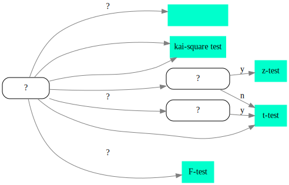

谈谈假设检验
Table of Contents
本文由作者原创，未经允许禁止转载。联系marcnuth(AT)foxmail.com了解转载事宜。
1 简介
1.1 假设检验存在的意义是什么？
假设检验属于推断统计，是在给定样本容量和置信水平的条件下，判断某个假设是否成立的一种统计方法。
1.2 假设检验能处理什么样的问题？
假设检验需要证明某个假设是否成立的场景。例如：
- 现实生活中，证明两批次牛奶的质量相同
- 机器学习中，证明某个模型的比另一个模型更好
1.3 如何应用假设检验？
应用假设检验有如下前提:
- 给出置信水平
- 确定样本容量
- 确定检验统计量
应用假设检验的步骤如下:
- 提出原假设(零假设)H0和备择假设H1
- 给定显著性水平 α 和样本容量 n
- 确定检验统计量和拒绝域的形式
- 根据 \(P(refuse\ H_0\ when\ it's\ truth) \le \alpha\)
- 根据样本的观测值确定P是否落于拒绝域，从而接受或拒绝H0
上面的步骤中，值得一提的是：
- 第一步中，原假设通常用两种情况。例如:
- 假设H0为 x = μ，则拒绝域是"!="，即为两侧，称之为 双边假设检验
- 假设H0为 x <= μ 或 x >= μ， 则拒绝域为">"或"<"，即为单侧，称之 为 单边假设检验
- 第三步中，检验统计量和拒绝域将会在后面作为重点详细讨论。
- 第四步中，"refuse H0 when it's true"即为“弃真”，与之对应的为“取伪”，
都是针对H0而言。也就是说：
- 弃真是说，当H0是真的时候，我们却拒绝了该假设。弃真也称为第I类错误。
- 取伪是说，当H0是假的时候，我们却接受了该假设。取伪也称为第II类错误。
弃真和取伪是相互对立的，我们尽量避免弃真时就会增加取伪出现的概率。在 显著性检验中，我们主要考虑和控制弃真的概率，不考虑取伪的概率。这也就 是为什么在第四步给出的不等式中，左侧的概率是弃真的概率，而右侧是给出 的显著性水平！
- 第五步中，通过第四部我们可以确定接受或拒绝H0的阀值，而在第五步中，我 们可以根据样本的观测值来计算出某个统计量，然后判断该统计量和阀值的大 小，以接受或拒绝H0
1.4 检验统计量的选择

2 检验统计量和拒绝域
2.1 z-检验
z检验用于针对均值的检验，使用前提:
- 正态总体
- 已知方差
检验统计量:
| 检验对象 | 统计量 |
|---|---|
| 单个正态总体的均值 | $$ Z = \frac{\overline{X} - \mu_0}{\sigma / \sqrt(n)} $$ |
| 2个正态总的均值差 | $$ Z = \frac{\overline{X} - \overline{Y} - \delta}{\sqrt{\frac{\sigma_1^2}{n_1} + \frac{\sigma_2^2}{n_2}}} $$ |
拒绝域:
| 原假设 | 拒绝域 | 备注 |
|---|---|---|
| $$ \mu > \mu_0 \ 或\ \mu_1 - \mu_2 > \sigma $$ | $$ z \ge z_\alpha $$ | |
| $$ \mu < \mu_0 \ 或\ \mu_1 - \mu_2 < \sigma $$ | $$ z \le -z_\alpha $$ | |
| $$ \mu \ne \mu_0 \ 或\ \mu_1 - \mu_2 \ne \sigma $$ | $$ abs(z) \ge z_{\alpha/2} $$ |
2.2 t-检验
t检验用于针对均值的检验，使用前提：
- 正态总体
可以看到，t检验和z检验的区别在于 是否已知方差 。事实上，我们可以将t检验看作z检验的变体，一种更“泛化”的检验形式。 在下面的统计量中，你将防线，t检验和z检验及其相似，不同点在于方差采用了估计量。
检验统计量:
| 检验对象 | 统计量 |
|---|---|
| 单个正态总体的均值 | $$ t = \frac{\overline{X} - \mu_0}{S / \sqrt(n)} $$ |
| 2个正态总的均值差 | $$ t = \frac{\overline{X} - \overline{Y} - \delta}{S_w\sqrt{\frac{1}{n_1} + \frac{1}{n_2}}} $$ $$ S_w = \frac{(n_1 - 1)S_1^2 + (n_2 - 1)S_2^2}{n_1 + n_2 + 2}$$ |
| 成对数据 | $$ t = \frac{\overline{D} - 0}{S_D / \sqrt(n)} $$ |
拒绝域:
| 原假设 | 拒绝域 | 备注 |
|---|---|---|
| $$ \mu < \mu_0 \ 或\ \mu_1 - \mu_2 < \sigma $$ | $$ t \ge t_\alpha(n-1) 或 t \ge t_\alpha(n_1 + n_2 + -1)$$ | 对于成对数据，原假设为单个正态的变种： \(\mu_D < 0\) |
| $$ \mu > \mu_0 \ 或\ \mu_1 - \mu_2 > \sigma $$ | $$ t \le -t_\alpha(n-1) 或 t \le t_\alpha(n_1 + n_2 + -1)$$ | 成对数据: \(\mu_D > 0\) |
| $$ \mu \ne \mu_0 \ 或\ \mu_1 - \mu_2 \ne \sigma $$ | $$ abs(t) \ge t_{\alpha/2}(n-1) 或 abs(t) \ge t_{\alpha/2}(n_1 + n_2 + -1) $$ | 成对数据: \(\mu_D \ne 0\) |
成对数据与单个正态总体检验的关系: 可以看到，对于成对数据的（均值差的）检验，无论从统计量还是拒绝域来看，都与单个正态总体的均值检验极其相似。为什么呢？ 我们可以这样思考，对于成对数据的检验，我们认为两个值的差值为正态分布，但我们不知道方差究竟有多大。因此从这个角度上说，成对数据对于均值差的检验，即为对正态总体的均值检验的变种。
2.3 卡方检验
检验统计量:
| 检验对象 | 统计量 |
|---|---|
| 单个样本的方差 | $$ \chi^2 = \frac{(n-1)S^2}{\sigma_0^2} $$ |
| 样本分布 |
拒绝域:
| 原假设 | 拒绝域 | 备注 |
|---|---|---|
| $$ \sigma^2 \le \sigma_0^2 $$ | $$ \chi^2 \ge \chi_\alpha^2(n-1) $$ | |
| $$ \sigma^2 \ge \sigma_0^2 $$ | $$ \chi^2 \le \chi_{1-\alpha}^2(n-1) $$ | |
| $$ \sigma^2 = \sigma_0^2 $$ | $$ \chi^2 \ge \chi_{\alpha/2}^2(n-1) 或 \chi^2 \le \chi_{1 - \alpha/2}^2(n-1)$$ |
2.4 F-检验
| 检验对象 | 统计量 |
|---|---|
| 两个样本的方差大小 | $$ F = \frac{S_1^2}{S_2^2} $$ |
拒绝域:
| 原假设 | 拒绝域 | 备注 |
|---|---|---|
| $$ \sigma^2 \le \sigma_0^2 $$ | $$ F \ge F_\alpha(n_1 -1, n_2 - 1) $$ | |
| $$ \sigma^2 \ge \sigma_0^2 $$ | $$ F \ge F_{1-\alpha}(n_1 -1, n_2 - 1) $$ | |
| $$ \sigma^2 = \sigma_0^2 $$ | $$ F \ge F_{\alpha/2}(n_1 -1, n_2 - 1) 或 F \ge F_{1-\alpha/2}(n_1 -1, n_2 - 1) $$ |
2.5 偏度峰度检验
偏度峰度检验是用于检验样本是否为正态总体的较好办法，尽管 $ χ2$检验也可以用作样本正态性的检验，但是卡方检验较容易犯第二类错误(取伪)，而偏度峰度检验更为有效。
3 显著性检验和P值检验
在显著性检验中，最核心的一步是根据 弃真的概率是否小于等于显著性水平 来判断是否接受原假设。 这种情况下，需要给定一个显著性水平。 但是很多情况下，我们想知道一个最小的显著性水平，而不是给定一个单纯的阈值来接受或者拒绝。 显著性水平最小，即当表达式 P(弃真) = α 成立时取得，所以 *最小的显著性水平即弃真的概率*，而这个最小的显著性水平称之为P值。我们将这种检验称之为P值检验。
显而易见的，P值检验和显著性检验几乎是同一回事，区别在于思考的方式不同:
- 显著性检验通过给定阈值，接受或拒绝原假设
- P值检验通过计算最小显著性水平(弃真概率)，获得P值。
当然，实际应用中，我们常通过 P<= 0.05 来判断是否显著，从而接受或拒绝原假设。此时又与显著性检验一致了，其中 α = 0.05。